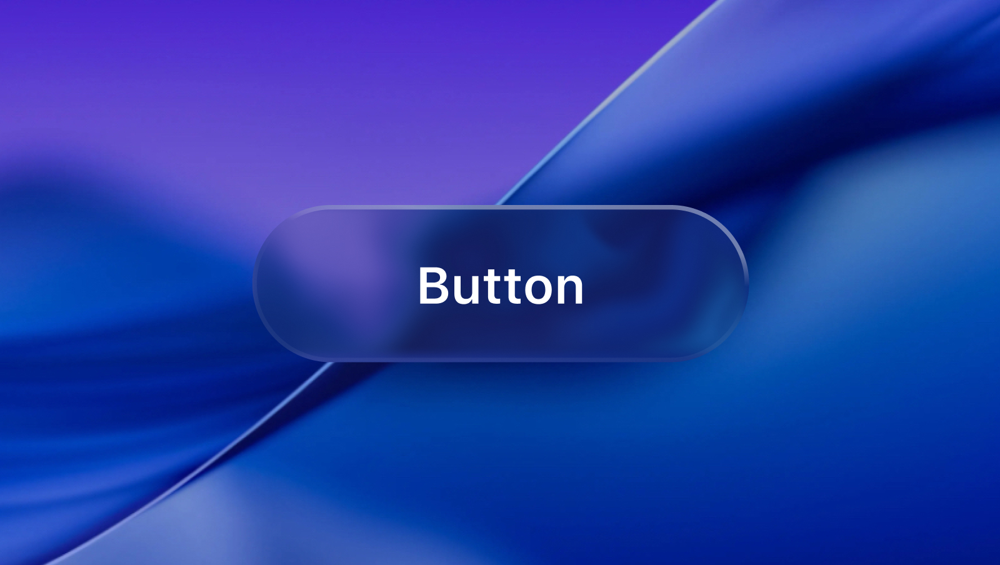
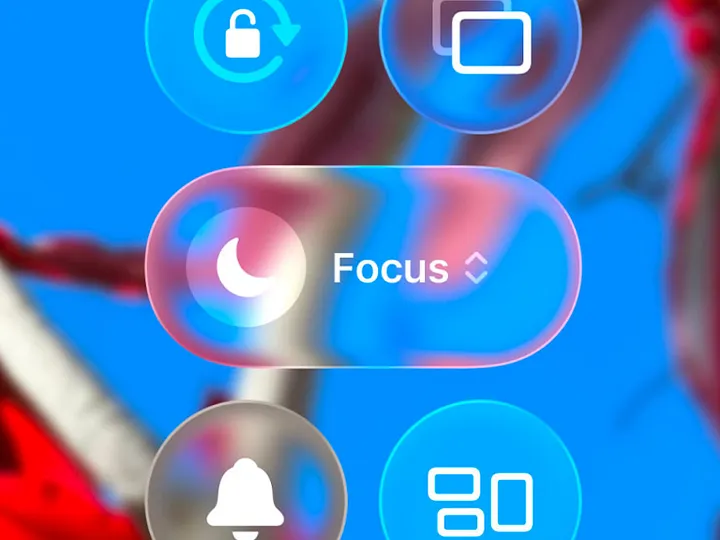

VINLUME / MATERIAL RESEARCH — LIQUID
Liquid.El cristal se vuelve táctil.
Superficies suaves que refractan el fondo. Pulsa los botones y arrastra las lentes; las acciones modifican este estudio de luz.
Botones / interruptor / deslizadores
Superficies estáticas disponiblesLuz que
puedes tocar.
Transparencia, volumen suave y un borde que recoge la luz.
Estudio / violetaArrastra la lente o utiliza las flechas del teclado.
La luz sigue al puntero. Los deslizadores cambian el material y el entorno.
Qué hace el material y cuánto cuesta
El fondo iluminado y las lentes se calculan por fragmento, sin ampliar una textura de fondo de baja resolución. El shader evalúa pliegues, luz de estudio y el desplazamiento refractivo de tres canales. Las etiquetas siguen en HTML.
Es una aproximación de lente en pantalla: no captura arbitrariamente el DOM situado detrás ni traza rebotes como Diamond. La integración en páginas reales necesita decidir cómo suministrar ese fondo y medir el coste conjunto.
LIQUID GLASS / REFERENCIAS LOCALES

